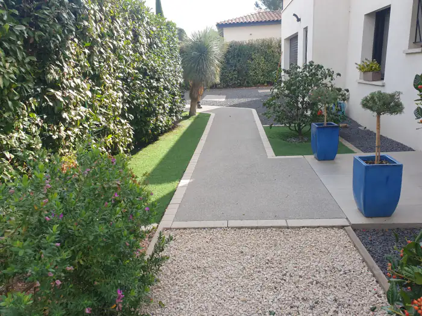
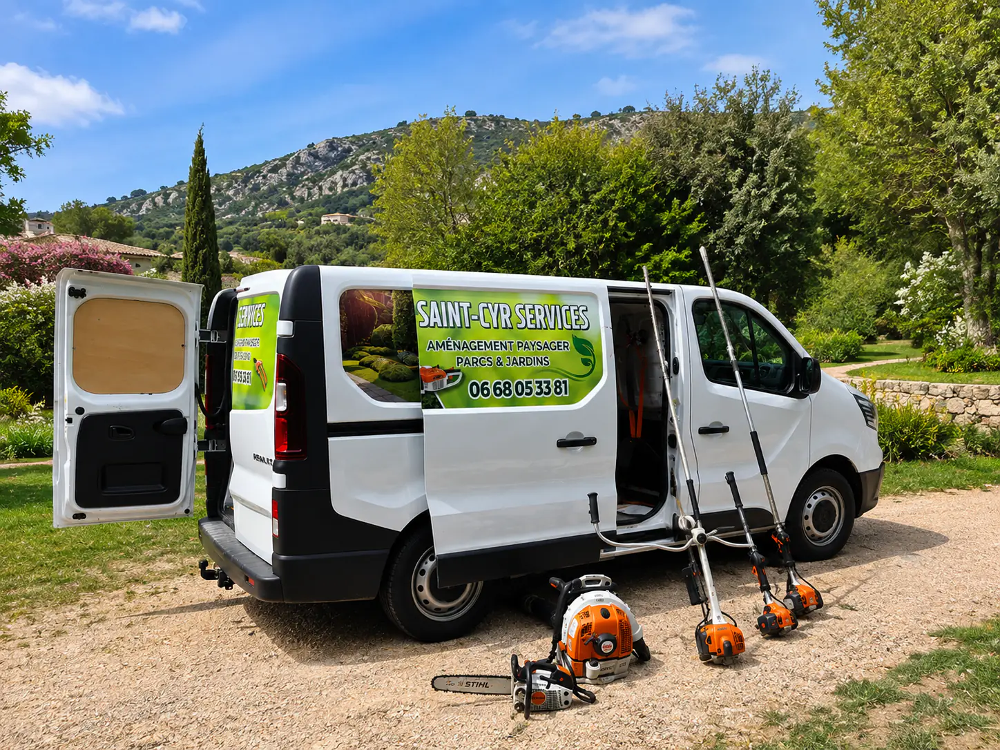
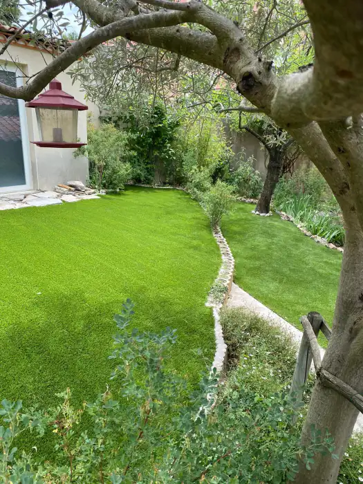
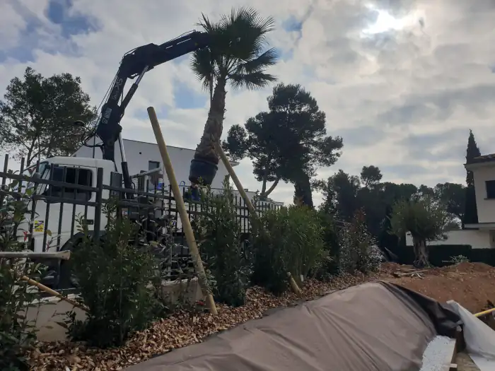
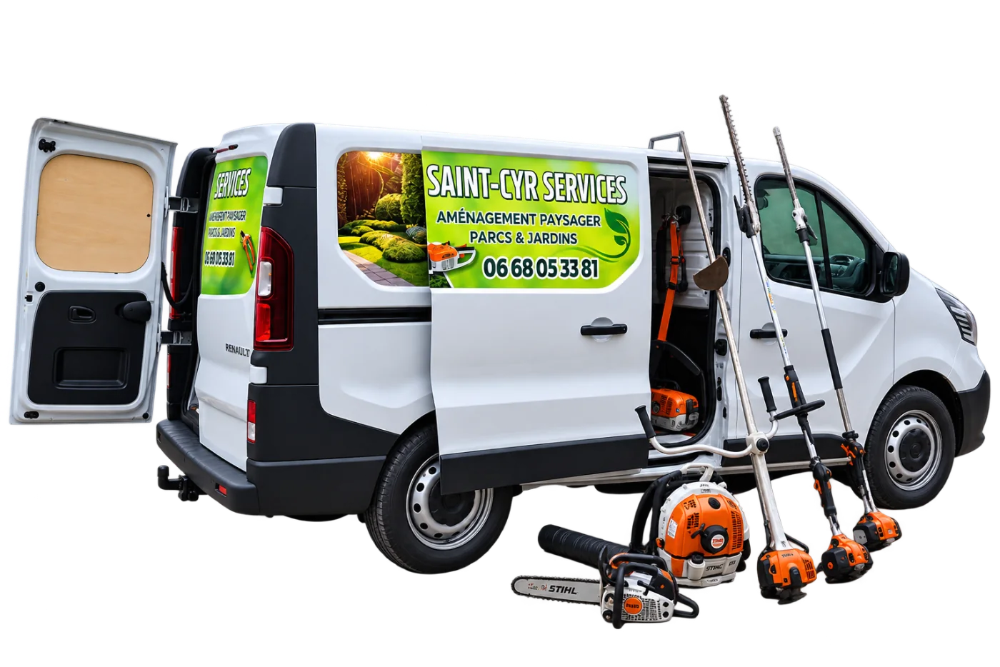

Aménagement minéral
Allées, cours, graviers, pas japonais en ardoise, béton désactivé, bordures acier.

Montpellier et alentours
Création et entretien, toute l’année
Allées et graviers, taille de haies, gazon, plantation, entretien. On crée le jardin, et on revient s’en occuper.
Ce qu’on fait
Un simple passage de taille, ou l’extérieur repris de zéro. Les deux se demandent de la même façon : un coup de fil.

Allées, cours, graviers, pas japonais en ardoise, béton désactivé, bordures acier.

Haies au cordeau, oliviers en nuage, arbres fruitiers, palmiers, taille en hauteur.

Semé, en plaques ou synthétique — avec la préparation de sol qui va avec.

Des plantes qui tiennent l’été d’ici. Et le camion-grue quand l’arbre ne passe pas par le portail.

Plages de piscine, terrasses bois ou carrelées, écrans de verdure contre le vis-à-vis.

Tonte, taille, débroussaillage, désherbage, feuilles. Déchets verts emportés.
Réalisations
Photos prises sur place, une fois le chantier terminé. Cliquez pour agrandir.
Le matériel
Le fourgon est équipé pour la journée. Vous n’avez rien à sortir, rien à louer, rien à emmener à la déchetterie.

Avis
5,0 sur 5 sur Google, sur 4 avis. Voici ceux qui ont laissé un commentaire, recopiés mot pour mot.
Très bon travail. Je recommande
Très bon travail, agréable. Je recommande. Merci encore
Avant que ce soit joli
Décaissement, géotextile, niveaux, drainage, bordures droites, dalles coulées. C’est cette partie-là qui décide si l’aménagement tient dix ans ou deux.
Contact
Si personne ne décroche, c’est qu’on est sur un chantier. On rappelle.
Sur place, on regarde le terrain, l’accès, l’exposition, et ce que vous voulez en faire.
Détaillé poste par poste. Gratuit, et sans engagement.